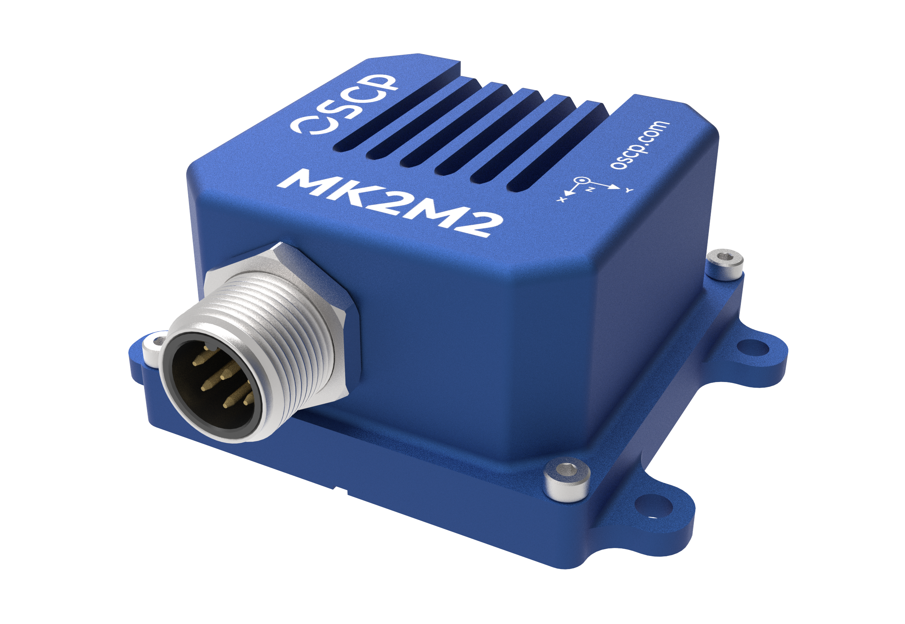
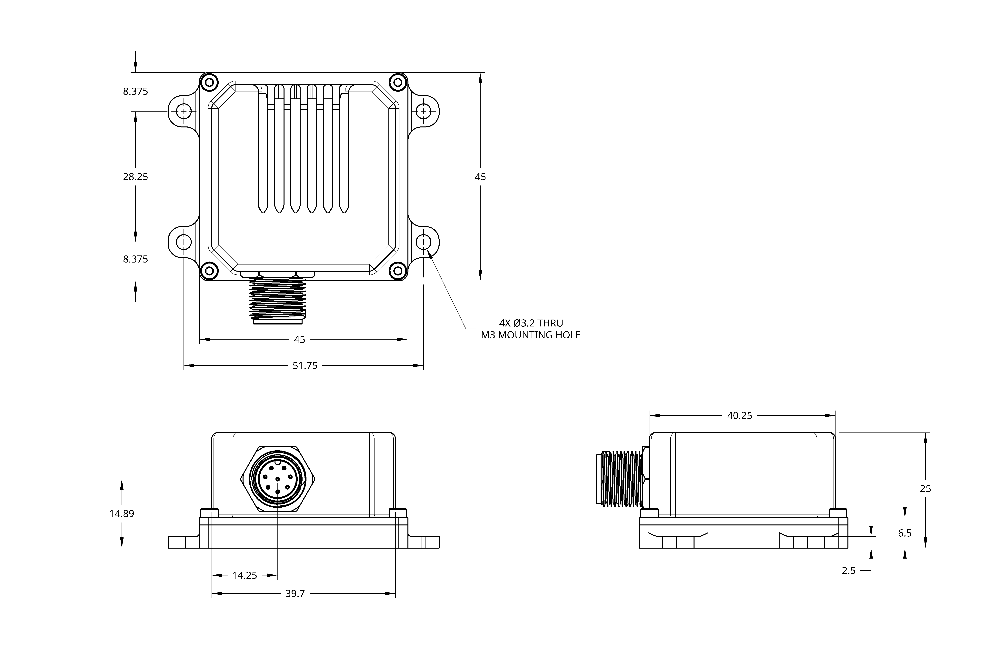

MK2M2
Revision
This documentation tracks REV10 (2026-08-21) and is preliminary — content is subject to change without notice. See the changelog for revision history.
Our most compact 11 degrees of freedom (DoF) unit — a MEMS-based IMU combining three gyroscope axes, three accelerometer axes, three TMR magnetometer axes and two inclinometer axes in a compact enclosure. The gyroscope design improves fault tolerance and compensates for sensor drift over time, holding angular rate accuracy in demanding or harsh conditions.

Applications
Small drones · Robotics · Autonomous rail · Geospatial mapping
Features
-
Low-drift gyroscopes
0.5 °/hr in-run bias stability
-
Low-drift accelerometers
< 15 μg in-run bias stability
-
Interface
RS-422 or CAN-FD
-
Power
1.2 W · +12 to +34 VDC
-
Dimensions
40 × 40 × 25 mm1 · 75 g
-
Environment
−40 °C to +85 °C · IP67
Functional Block Diagram
Specifications
Indicative figures only
Values below are at typical operating conditions. Test conditions, min/max limits over temperature, scale factor and non-linearity errors are given in the full specification sheet — contact us at info@oscp.com to request it.
Gyroscopes
- Dynamic Range (Selectable)
- ±125 to ±4000 °/sec
- In-Run Bias Stability
- 0.5 to < 1.0 °/hr
- Angle Random Walk
- 0.06 °/√hr
Accelerometers
- Dynamic Range (Selectable)
- ±2, ±4, ±8, ±16 g
- In-Run Bias Stability
- < 15 µg
- Velocity Random Walk
- 0.008 m/sec/√hr
Magnetometers & Inclinometers
- Magnetometer Dynamic Range
- ±20 G
- Inclinometer Dynamic Range (Selectable)
- ±0.5, ±1, ±2, ±3 g
Communications
- Protocol
- RS-422 or CAN-FD
- Output Data Rate
- up to 500 Hz
Electrical
- Operating Voltage
- 12 to 34 V
- Power Consumption
- 1.2 W
Mechanical
- Operating Temperature
- −40 to +85 °C
- Rating
- IP67
- Dimensions
- 40 × 40 × 25 mm1
- Weight
- 75 g
Important
All specifications are no longer guaranteed if the unit is opened.
Certifications & Environmental Testing
The MK2M2 has been validated by an independent ISO/IEC 17025 accredited laboratory.
Ingress Protection
- Rating
- IP67 — IEC 60529:2019
Electromagnetic Compatibility
- Emissions
- EN 55032 Class A · FCC Part 15 · ICES-003
- Immunity
- EN 55035 / CISPR 35
Vibration & Shock
- Sine sweep
- 20–2000 Hz up to 8 g peak, all three axes
- Shock
- Half-sine up to 40 g peak, 11 ms, all three axes
About vibration and shock
Units were tested unpowered and verified functional afterwards. These figures describe what the unit survives, not its performance during exposure.
Mechanical Drawings
The enclosure features M3 mounting holes, with mechanical drawings showing the mounting through-holes and side views indicating the connector location. All units are given in mm.

Previous M2 Revision
For reference, a previous enclosure version was manufactured with M2 mounting holes. This earlier version had the same overall dimensions, with a slightly different distance between the centers of the smaller mounting holes. This version is no longer in production, but the corresponding mechanical drawings are available on request.
Marking
The top of the package is marked with a decal indicating the orientation axes of the unit.